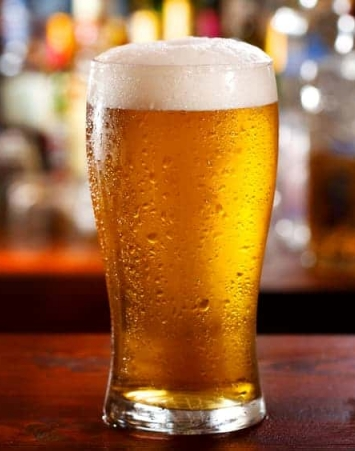

Golden Ale

Golden Ale is part of the group of Blonde Ales, is a straw to medium ale beer that has moderate bitterness and maltiness. The style is closely related to traditional mass market lagers, and was originally intended as a way of transitioning mass market consumers to craft beers.
Dry, light to medium body with light malty sweetness. Low to medium hop bitterness with minimal aroma. Slight fruit flavor. Light yellow to golden blonde color with no chill haze. Med to high carbonation. All malt, dry, crisp beer approximating a lager in overall character. Enjoying a resurgence at many microbreweries as an alternative to American style lagers.
Ingredients (15l batch):
- Grain Malts
- 2kg Pilsner
- 120gr Cookie
- 120gr Carapils
- 200gr Viena
- Hops
- 14gr Hallertauer(60' boiling)
- 15gr Fuggle(60' boiling)
- Yeast
Step by step
- Mill the grains and dough-in targeting a mash of around 3l of water to 1 kg of grain (a liquor-to-grist ratio of about 3:1 by weight) and a temperature of 67 °C. Maintain this temp. at least for 60min o more (I usually leave it for 90min to make sure of extract the sugars and get the enzymatic conversion.
- Recirculate the wort while heating it until the temp. raises to 76 °C. The first thing is to get a more clear wort, and the second to stop the enzymatic conversion. Sparge slowly with 77 °C water, collecting wort until the pre-boil kettle volume is around 18l or the wort gets the gravity of 1.030 (9.5 °P).
- The total wort boiling time is around 60 minutes. Add the bittering hops. Add Irish moss or other kettle finings with 15 minutes left in the boil.
- After finishing boiling chill the wort to reach 67 °F (19 °C) and then add the entire package of yeast, then aerate thoroughly.
- Ferment in a rage of temp between 19 °C and 22°C, until the yeast drops clear. At this temperature and with healthy yeast, fermentation should be complete in about one week or less. Allow the lees to settle and the brew to mature without pressure for another two days after fermentation appears finished.
- Rack to a keg and force carbonate or rack to a bottling bucket, add priming sugar, and bottle. Target a carbonation level of 2.5 volumes.
References
Return to main page